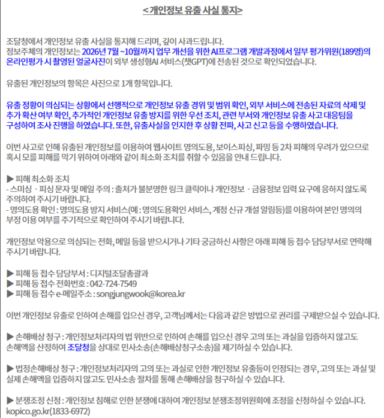
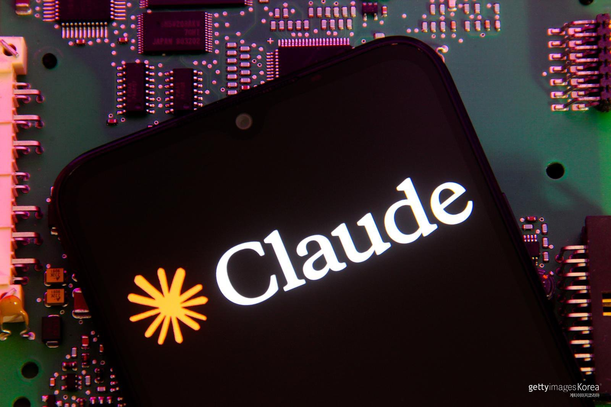

01 · KR
조달청 AI 개발 중 평가위원 얼굴사진 유출
공공 데이터는 효율보다 먼저 입력 통제
디지털데일리는 조달청이 AI 개발 과정에서 조달 평가위원 189명의 얼굴사진을 챗GPT에 입력해 외부 유출 논란이 발생했다고 보도했다. 개인정보가 모델 입력 데이터로 이동할 때 비식별화와 승인 절차가 필요하다.
원문 보기 ↗ADDIT INSIGHT
AI에 넣어도 되는 데이터 목록과 승인 책임자를 먼저 정하자.
조달청 얼굴사진 유출, 클로드 국내 사용자 확산, Gemini 4 Carbon·Robotics 2.5, AI 버블과 OpenAI 소송 사례로 AI 확장의 조건을 살펴봅니다.
오늘은 AI를 더 많이 쓰는 방법보다, 어떤 데이터를 넣고 어디까지 실행하게 하며 누가 결과에 책임질지를 점검합니다.
클로드 국내 계정 유출 신고, 기업 AI의 데이터 경계 재점검
클로드 국내 앱 사용자 500만, 실험에서 업무 기본값으로
제미나이 Carbon·Robotics 2.5, 화면 밖 현실로 확장
클로드 오피스 공개, AI 경쟁이 업무 소프트웨어로 이동
평가위원 사진 유출·미국 소송, AI 책임 기준이 쟁점으로

공공 데이터는 효율보다 먼저 입력 통제
디지털데일리는 조달청이 AI 개발 과정에서 조달 평가위원 189명의 얼굴사진을 챗GPT에 입력해 외부 유출 논란이 발생했다고 보도했다. 개인정보가 모델 입력 데이터로 이동할 때 비식별화와 승인 절차가 필요하다.
원문 보기 ↗AI에 넣어도 되는 데이터 목록과 승인 책임자를 먼저 정하자.

AI를 실험 도구에서 업무 기본값으로
동아일보는 클로드의 국내 앱 사용자가 500만 명을 넘어섰고 1년 새 10배 늘었다고 보도했다. 전문직·개발자 중심의 확산은 조직별 기본 모델과 권한 표준화의 필요성을 키운다.
원문 보기 ↗사용 금지보다 업무별 기본 모델·권한·검수 기준을 표준화하자.
성장 전망에 금리·수요·규제 시나리오 붙이기
한국경제는 AI 버블이 꺼질 경우 닷컴버블 때보다 충격이 클 수 있다는 경고를 전했다. 모델·칩·데이터센터 투자가 동시에 확대되는 만큼 회수 기간과 비용 구조를 함께 검증해야 한다.
원문 보기 ↗AI 투자 계획을 낙관·기준·축소 시나리오로 나눠 검증하자.

에이전트에서 물리적 지능까지 실행 범위 확장
구글은 Gemini 4 Carbon과 여러 에이전트가 협업하는 Antigravity 기능을 공개했다. 이어 Robotics 2.5를 시각·언어·행동 모델로 소개하고 200가지 이상의 작업으로 성능과 작업 범위를 검증했다고 설명했다.
Carbon 원문 보기 ↗ Robotics 원문 ↗실행 범위가 넓어질수록 승인 지점과 실패 복구 설계를 함께 키워야 한다.
안전성 선언을 사람의 검토와 기록으로 증명
SBS는 미국 8개 주정부가 ChatGPT의 안전성 홍보와 청소년 피해를 문제 삼아 각각 소송을 제기했다고 보도했다. 소송은 위험 행동·자해·폭력 계획과 소비자 보호 책임을 쟁점으로 삼았다.
원문 보기 ↗안전성은 선언이 아니라 연령 보호·탐지·사람 검토·기록으로 증명한다.